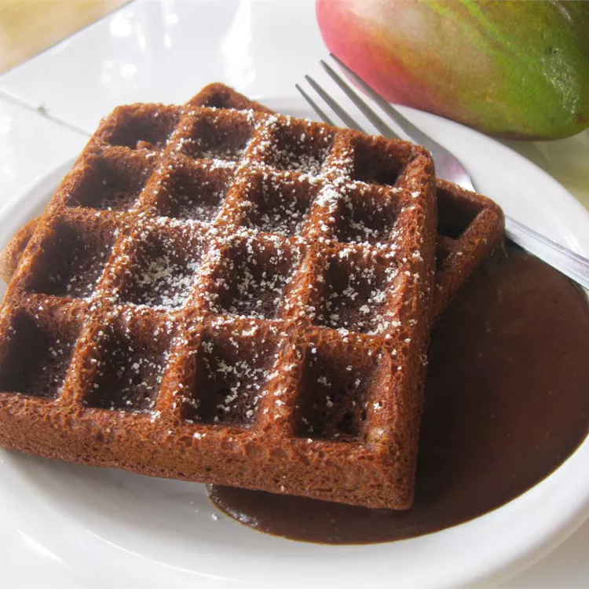

GingerBread Waffle

Description
Gingerbread waffles are a delicious and festive breakfast treat that combines the warm, spicy flavors of gingerbread with the crispy, golden texture of a waffle.
Ingredients
Waffles:
- 1 ½ cups all-purpose flour
- ½ cup white sugar
- 3 tablespoons unsweetened cocoa powder
- 3 teaspoons baking powder
- ½ teaspoon salt
- ½ teaspoon salt
- 2 large eggs
- 4 tablespoons butter, melted
Hard Sauce:
- 1 tablespoon butter, softened
- ¾ cup confectioners' sugar
- ½ teaspoon vanilla extract
- 1 teaspoon milk
Other:
Directions
- Preheat a waffle iron.
- Make waffles: Stir together flour, sugar, cocoa, baking powder, and salt in a large mixing bowl. Stir in milk, eggs, and butter until the mixture is smooth.
- Make hard sauce: stir together softened butter, confectioners' sugar, vanilla extract, and milk. Sauce should be fairly stiff. Set aside.
- Spray preheated waffle iron with nonstick cooking spray. Pour waffle mix onto hot waffle iron. Cook until golden brown. Serve hot with hard sauce.